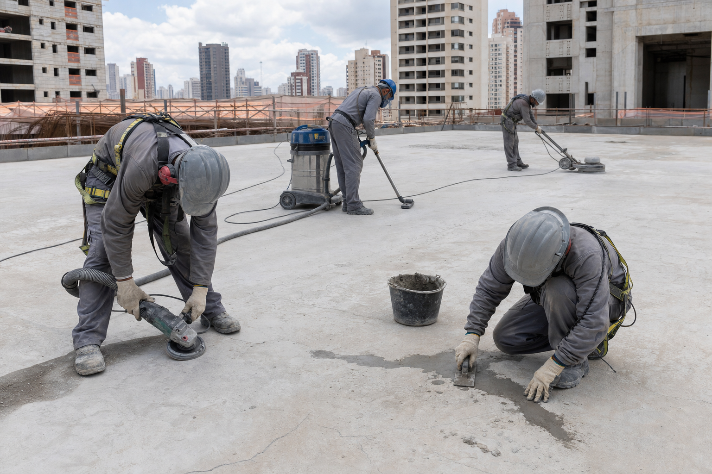
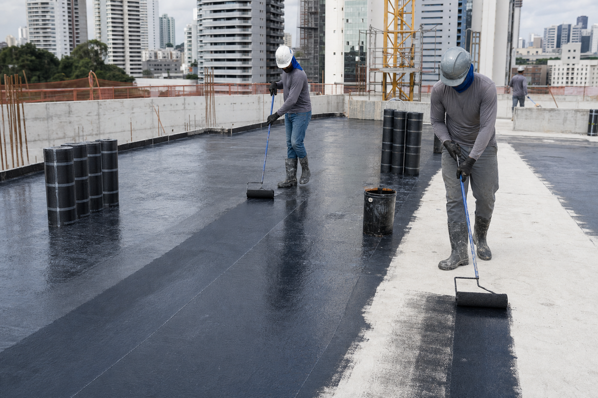
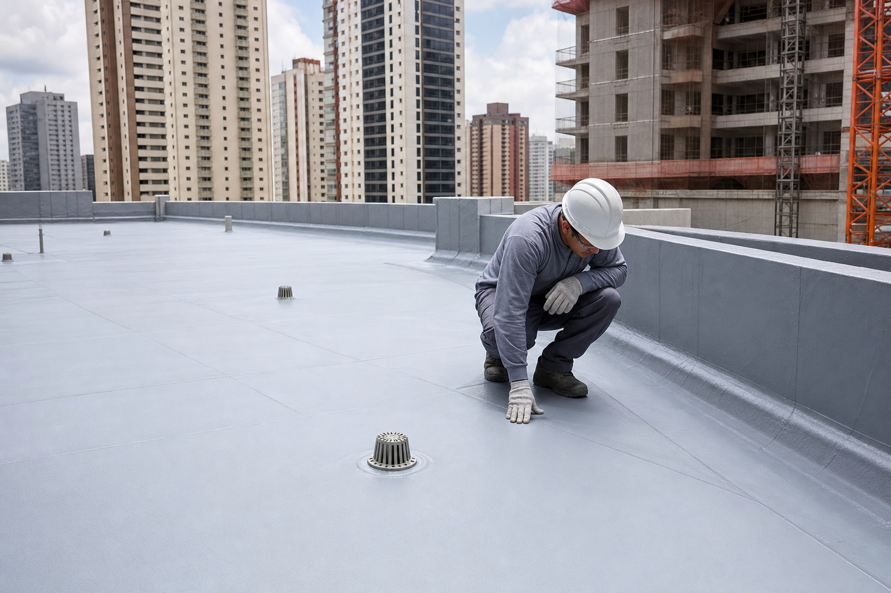

Planejamento
Levantamento das áreas e organização das frentes conforme o cronograma da construção.
Barra Funda — São Paulo
Atuação integrada às etapas da construção para proteger lajes, coberturas, áreas técnicas e demais pontos previstos no empreendimento.
Visão geral
A impermeabilização acompanha o avanço da construção. Cada frente de trabalho é avaliada e preparada antes da aplicação do sistema indicado para aquela área.
A execução é organizada por etapas para atender diferentes pavimentos sem interferir no andamento geral da obra, mantendo controle dos pontos tratados e das inspeções realizadas.
Etapas do trabalho
Levantamento das áreas e organização das frentes conforme o cronograma da construção.
Limpeza, regularização e correção da superfície antes do sistema impermeabilizante.
Reforço de juntas, ralos, encontros, fissuras e demais pontos críticos.
Execução do sistema especificado com controle de consumo, camadas e acabamento.
Verificação final da área tratada e liberação para a próxima etapa da obra.
Evolução visual
Imagens ilustrativas das etapas técnicas do processo de impermeabilização.



Converse com a Brasil Forte para avaliar o escopo completo da sua obra.